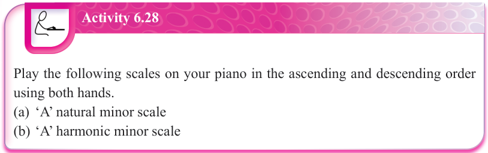
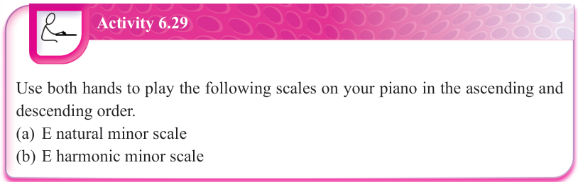
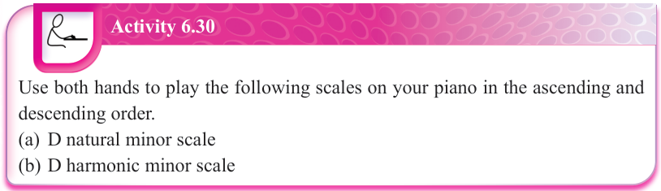
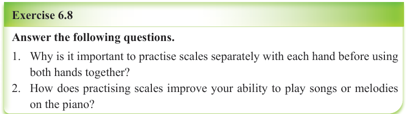

Activity 6.28
Play the following scales on your piano in the ascending and descending order using both hands.
- (a) ‘A’ natural minor scale
- (b) ‘A’ harmonic minor scale
How to play the E minor scale on the piano
The E minor scale is relative to G major scale. Thus, both E minor and G major scales share a key signature with one sharp which is note F sharp (F♯). When playing E natural minor scale, the fingering is the same as in G major scale. However, when playing E harmonic minor scale, note D becomes D♯.

Activity 6.29
Use both hands to play the following scales on your piano in the ascending and descending order.
- (a) E natural minor scale
- (b) E harmonic minor scale

Activity 6.30
Use both hands to play the following scales on your piano in the ascending and descending order.
- (a) D natural minor scale
- (b) D harmonic minor scale

Exercise 6.8
Answer the following questions.
-
1. Why is it important to practise scales separately with each hand before using both hands together?
-
2. How does practising scales improve your ability to play songs or melodies on the piano?